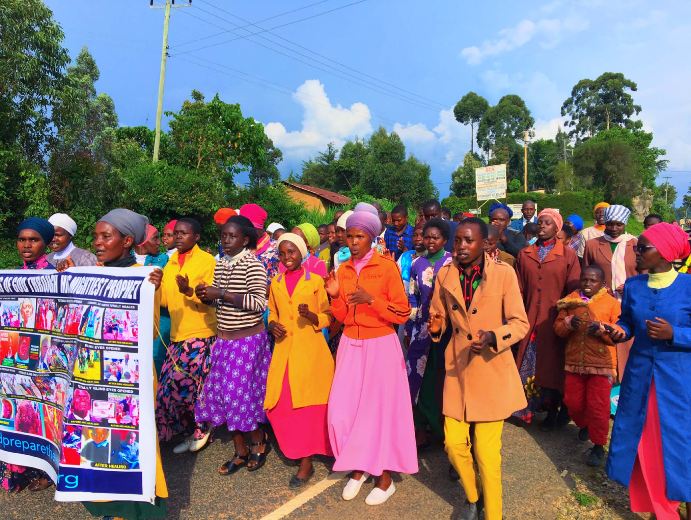

About NCYC 2026
"Arise, Shine; For Your Light Has Come" — Isaiah 60:1
Ministry of Repentance and Holiness
Founded 2005 · Led by Prophet Dr. David Edward Owuor
The Messiah is coming.
This vision stands as the divine alarm to the nations and the central message of the ministry.
Preparing the Way for the glorious coming of the Messiah.
Through powerful preaching, revival meetings, healing services, conferences, and global broadcasts.
The Ministry of Repentance and Holiness is a global end-time ministry mandated by THE LORD GOD OF ISRAEL to prepare the nations for the imminent and glorious coming of THE LORD JESUS CHRIST. It exists to restore the true Gospel of repentance, righteousness, and holiness — calling the Church and all humanity back to obedience to the Word of GOD in preparation for eternity.
The ministry stands firmly on the authority of the Holy Scriptures and teaches uncompromising obedience to the Word of GOD as the only way to prepare for the Kingdom of Heaven. All services are free and open to all, in obedience to the Gospel of CHRIST.
Why Nandi County. Why 2026. Why You.
NCYC 2026 is not a programme. It is a divine appointment for the youth of Nandi County.
The Nandi County Youth Conference 2026 is born out of a deep conviction that the youth of Nandi County are not an afterthought — they are the frontline of revival in this generation.
GOD is calling young people from every sub-county, every church, and every background to come together as one — to seek His face, receive fresh fire, and go back transformed.
Six days. Kapsabet. Free entry. Open to all youth. This is the hour of preparation.
"Arise, shine; for your light has come! And the glory of THE LORD is risen upon you." — Isaiah 60:1

Six Days of Encounter
Every session is structured and Spirit-led — from arrival to commissioning.
Revival & Preaching
Powerful nightly revival services and morning sessions with anointed ministers of the Word — preaching repentance, holiness, and the coming of THE LORD.
Prayer & Intercession
Corporate prayer watches, nights of prayer, and intercession training — building a generation that knows how to stand before GOD.
Worship & Encounter
Deep, Spirit-led worship sessions that usher in the presence of GOD and create a space for genuine encounter and transformation.
Healing & Commissioning
Healing services in the name of JESUS, and a final commissioning that sends youth back as carriers of revival fire — equipped and consecrated for THE LORD's purposes.
From the Leadership
The bishops and youth leaders of Nandi County speak into this moment — calling the youth to arise.
[Quote from Bishop — a word about the conference, the call to youth, or the urgency of repentance and holiness in this hour. Replace this with the bishop's actual words.]
[Quote from Bishop — a word about the conference, the call to youth, or the urgency of repentance and holiness in this hour. Replace this with the bishop's actual words.]
[Quote from a Youth Leader — a word about the conference, the call to youth, or the urgency of repentance and holiness in this hour. Replace this with their actual words.]
[Quote from a Youth Leader — a word about the conference, the call to youth, or the urgency of repentance and holiness in this hour. Replace this with their actual words.]
Repent.
Be holy.
Prepare the way.
The Messiah is coming.
This is the hour of preparation. This is the time of repentance.
THE LORD JESUS CHRIST is coming in glory.
Statement of Faith
The ministry stands on the uncompromising authority of the Holy Scriptures.
The Holy Bible
The Holy Bible is the infallible, authoritative Word of GOD — fully inspired by the Holy Spirit and the highest final authority in every aspect of life.
The Trinity
We believe in one GOD, eternally existent in three Persons: GOD the Father, GOD the Son, and GOD the Holy Spirit.
THE LORD JESUS CHRIST
We believe in the deity of our LORD Jesus Christ — His virgin birth, His bodily resurrection, His ascension, and His death that completely redeemed mankind from sin.
Salvation
All who believe in CHRIST JESUS as LORD and Saviour are saved. The work of the Cross fully redeemed humanity from the power of sin and death.
The Holy Spirit
The Holy Spirit is the Third Person of the Trinity. The baptism of the Holy Spirit is manifested through the fruit and the gifts of the Spirit.
The Rapture
The Rapture is the imminent, premillennial return of JESUS CHRIST for His holy Church — when those living in holiness shall be caught up to meet THE LORD in the air.
Repentance & Holiness
True repentance through the precious blood of CHRIST JESUS and the sanctifying power of the Holy Spirit enables believers to live holy lives before GOD.
Water Baptism
We believe in water baptism by immersion as an act of obedience to the Word of GOD and a public confession of faith in JESUS CHRIST.
This Is Your Moment
To every young person in Nandi County — you are not too broken, too young, too far, or too ordinary for GOD to use. This conference is a divine appointment.
GOD has not abandoned your generation. He is seeking young men and women willing to say "Here I am, LORD — use me." Come with an open heart. Come hungry. Come expecting. Do not miss it.
Register Now — It's Free